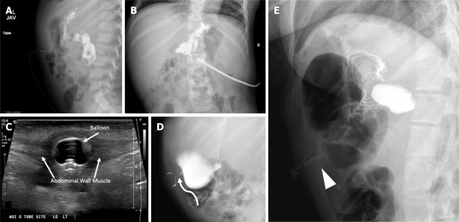
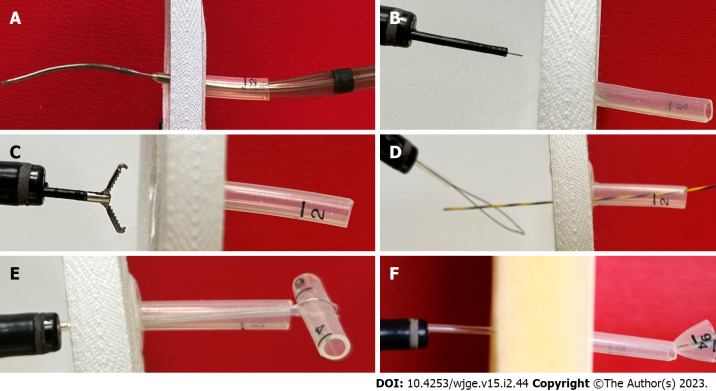
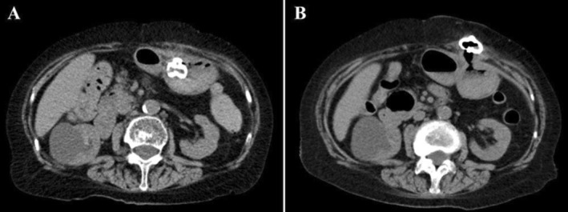
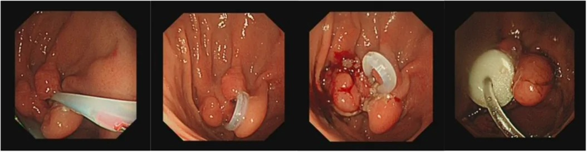

1829 — Hội chứng nút bị vùi sau mở thông dạ dày ở trẻ / Buried bumper syndrome (BBS) in children
Tags: pattern:nut-bi-vui pattern:ro-quanh-lo-mo vung:da-day vung:thanh-bung protocol:chup-ro-can-quang protocol:CT-bung protocol:sieu-am protocol:noi-soi
Mức chắc chắn (certainty): tổng hợp y văn (literature synthesis) — tổng hợp từ y văn mở, đối chiếu PMCID (Europe PMC): Menni A, World J Gastrointest Endosc 2023, PMC10011891; Patel DD, World J Radiol 2025, PMC12210205; Inaba S, Clin Case Rep 2025, PMC12665147; Adima A & Patel Y, JPGN Rep 2026, PMC13699950. Số chưa kiểm chứng ghi "chưa rõ".
Bài này trả lời "vì sao không bơm được sữa dù ống còn đó": nút trong (internal bumper) đã chui vào thành dạ dày/thành bụng. Rò da–dạ dày sau khi rút ống ở 1813; cai nuôi ống và rút ống ở 1805; chăm sóc ống và kiểm tra vị trí ở 083.
1. Tổng quan bệnh học – cơ chế hình ảnh
- Định nghĩa (BBS): nút giữ trong (internal bumper/balloon) của ống mở thông dạ dày (gastrostomy tube, G-tube) di chuyển từ lòng dạ dày vào thành dạ dày, rồi ra đường hầm da–dạ dày, nằm bất kỳ đâu giữa niêm mạc dạ dày và mặt da (Menni A 2023, PMC10011891). Đường hầm xẹp lại và biểu mô hóa lỗ trong → thức ăn không vào được dạ dày, ống "còn nguyên" nhưng vô dụng.
- Cơ chế — TẠI SAO nút bị vùi (không chỉ "do lâu ngày"):
- Chèn ép kéo dài giữa nút ngoài (external bolster) và nút trong → mô dạ dày + thành bụng bị kẹp như "bánh sandwich" → thiếu máu niêm mạc → loét → xơ tại chỗ nút tỳ (Menni A 2023, PMC10011891).
- Lực kéo ngoài quá mức (bít ngoài quá chặt, kéo ống, tăng cân nhanh) làm tăng áp lực kẹp — đây là yếu tố được nêu ở cả loạt người lớn và ca trẻ.
- Vật liệu nút cứng/nửa cứng (polyurethane; hệ Sacks-Vine bị nhắc nhiều lần) dễ gây BBS hơn nút mềm/bóng (Menni A 2023, PMC10011891).
- Béo lên nhanh sau khi nuôi ăn hiệu quả: ca 84 tuổi tăng 37,5 → 41,3 kg (BMI 17,4 → 19,1) trong 6 tuần, lớp mỡ dưới da lỗ mở 22 mm — đủ để "nuốt" nút (Inaba S 2025, PMC12665147). Ở trẻ, cân nặng tăng nhanh sau đặt ống là bối cảnh tương tự.
- Tần suất: 0,3–2,4% mỗi bệnh nhân PEG mỗi năm, có loạt tới 2,0–6,7% số lần đặt PEG; ước tính chung ~2,8% (Menni A 2023, PMC10011891; Inaba S 2025, PMC12665147). Ca đầu tiên: 7/125 lần PEG trong 2 năm (1988); thuật ngữ do Klein đặt năm 1990.
- Thời điểm: điển hình là biến chứng muộn (tháng–năm), nhưng có thể trong vài tuần — ca trên chỉ 6 tuần sau PEG (Inaba S 2025, PMC12665147). Vì vậy "mới đặt 1–2 tháng" không loại trừ BBS.
- Ở trẻ — điều đã biết và điều chưa: loạt nhi duy nhất dùng dụng cụ cắt nội soi (Flamingo) gồm 9 trẻ 2–16 tuổi (6 nữ/3 nam), ASA trung vị 3, tức trẻ đa bệnh nền, suy dinh dưỡng/thần kinh nặng (Adima A & Patel Y 2026, PMC13699950). Tỉ lệ BBS riêng ở trẻ chưa rõ — các loạt nhi chỉ mô tả ca được điều trị, không có mẫu số.
- Vì sao hình ảnh "bình thường" mà vẫn có bệnh — vật lý học:
- Nút là polymer tỷ trọng mô mềm, không cản quang mạnh: trên X-quang nó chỉ là bóng mờ mềm, không tạo khuyết thuốc tròn (filling defect) trong lòng dạ dày như bóng chứa khí/dịch bình thường. Thuốc cản quang vẫn chảy theo niêm mạc dạ dày → hình ảnh trông "bình thường" dù nút đã ra ngoài (Patel DD 2025, PMC12210205).
- Siêu âm: bóng/nút nằm trong mô mỡ dưới da (−50 đến −100 HU tương đương giảm âm), tạo cấu trúc tròn/ống giảm âm trong thành bụng, không thấy trong lòng dạ dày.
- CT: nút nằm ngoài lòng dạ dày, trong lớp mỡ thành bụng; đo được độ dày mỡ dưới da và khoảng cách nút–da, đồng thời thấy áp-xe/tụ dịch đi kèm. Khí tự do lượng nhỏ ngay sau đặt ống là bình thường, nhưng khí + dịch + thành bụng dày sau vài tuần là nhiễm trùng.
2. Mẫu hình + chẩn đoán phân biệt theo vị trí (gamut)
- Theo mức độ (chốt xử trí):
- Vùi một phần (partial): nút còn nhìn thấy một phần trong lòng dạ dày, đầu nối còn thông; có thể gỡ bằng kẹp/snare từ trong + đẩy từ ngoài.
- Vùi hoàn toàn (complete): nút nằm trong thành/thành bụng, lỗ trong bị niêm mạc che kín → không bơm được, phải can thiệp chuyên khoa (Menni A 2023, PMC10011891; Adima A & Patel Y 2026, PMC13699950).
- Theo vị trí nút trên hình ảnh:
- Trong thành dạ dày — dày niêm mạc quanh nút, có "vòm" niêm mạc.
- Trong đường hầm da–dạ dày — nút ở giữa thành bụng, ổ dịch/quanh nút.
- Dưới da — sờ thấy cục, da đỏ, rỉ dịch; dễ nhầm hạch/áp-xe.
- Gamut "rỉ dịch + đau quanh lỗ mở": BBS · nhiễm/tụ dịch lỗ mở · ống tụt vào phúc mạc · rò dạ dày–đại tràng · hẹp/phì đại mô hạt · ống gãy/hở thành ống.
- Gợi nhớ "ỐNG CÒN, SỮA KHÔNG VÀO": Bumper buried, Balloon ngoài lòng, Bowel interposed (đại tràng chen giữa), Break (gãy ống), Block (tắc do mô hạt/sỏi sữa).
3. Bảng so sánh phân biệt (ma trận đối chiếu)
| Thực thể (entity) | Hình ảnh điển hình | Chốt vào (rule-in) | Chốt loại (rule-out) | Gợi ý xác nhận |
|---|---|---|---|---|
| BBS vùi một phần | Chụp cản quang: còn khuyết thuốc/bóng một phần trong dạ dày; nội soi thấy nút bị niêm mạc phủ một phần | Đầu nối còn thông nhưng lưu lượng giảm + nội soi thấy nút trong "vòm" niêm mạc | Thuốc ra tự do, khuyết bóng tròn đầy đủ trong lòng dạ dày = vị trí bình thường | Nội soi + thử đẩy/kẹp; không cần CT |
| BBS vùi hoàn toàn | X-quang cản quang "bình thường" nhưng KHÔNG có khuyết bóng; US: bóng trong thành bụng; CT: nút ngoài lòng dạ dày trong mỡ thành bụng | Không bơm được + không thấy bóng trong dạ dày trên ≥ 2 phương thức | Có bóng tròn trong lòng dạ dày trên US/CT = không vùi | US/CT là chốt khi X-quang không giải thích được (Patel DD 2025) |
| Nhiễm/áp-xe lỗ mở | Dày mô mềm quanh lỗ, ổ dịch có vỏ ngấm thuốc; khí trong mô | Sốt + đau + ổ dịch có vỏ + khí trong mô | Nút nằm đúng trong lòng dạ dày, không ổ dịch | US (ổ dịch, Doppler vỏ) → CT nếu sâu |
| Ống tụt vào phúc mạc | Thuốc cản quang chảy tự do trong phúc mạc, không ôm niêm mạc; bóng ở ngoài dạ dày nhưng không trong thành bụng | Thuốc ngoài lòng + đau bụng cấp | Thuốc ôm niêm mạc dạ dày = trong lòng | Chụp cản quang AP + nghiêng; CT khi nghi thủng |
| Rò dạ dày–đại tràng | Thuốc từ dạ dày vào đại tràng (thấy haustra); tiêu chảy sau đổi ống, hơi thở hôi | Tiêu chảy ngay sau bơm + thuốc vào khung đại tràng | Chỉ dạ dày–ruột non bình thường | Chụp cản quang/fluoroscopy; CT |
| Bóng di chuyển xuống môn vị/tá tràng | Dạ dày căng, mất niêm mạc, mức khí–dịch; bóng ở môn vị/tá tràng | Nôn + bụng chướng + bóng ở môn vị | Bóng ở đáy/thân dạ dày = bình thường | X-quang nghiêng + US |

Trẻ 5 tuổi, rỉ dịch và đau quanh lỗ mở. (A, B) Chụp cản quang: thuốc đầy dạ dày và ruột non, không thoát ra ngoài — trông "bình thường"; (C) siêu âm: bóng ống nằm trong thành bụng trước, ngoài lòng dạ dày; (D) fluoroscopy kiểm tra: bóng nằm trong thành bụng trước; (E) ca khác: bóng méo trong thành bụng. Nguồn: Patel DD et al., World J Radiol 2025, Fig. 7 — CC BY-NC 4.0.Dấu hiệu "khuyết bóng mất" — đọc thế nào
- Bình thường, bóng chứa khí/dịch trong lòng dạ dày tạo khuyết thuốc tròn, đều ở mặt trong thành bụng, sâu hơn cân cơ.
- Trong BBS: khuyết đó biến mất; nếu bóng bị bóp méo thấy được trong thành bụng thì đó là dấu hiệu trực tiếp (Patel DD 2025, PMC12210205).
- Vì vậy câu hỏi đúng khi đọc phim không phải "có thuốc trong dạ dày không" mà là "có khuyết bóng tròn trong lòng dạ dày không".
4. Protocol chụp + phân độ + xử trí
- Bước 1 — Chụp cản quang dạ dày (contrast radiography) AP + nghiêng ngang: bơm 10 mL thuốc tan trong nước 180–300 mgI/mL (giảm còn 5 mL ở trẻ < 1 tuổi), chụp ngay tư thế nghiêng ngang + AP ngửa. Không dùng baryt vì nguy cơ tràn phúc mạc (Patel DD 2025, PMC12210205).
- Bước 2 — Siêu âm đầu dò cao tần thành bụng: tìm bóng/nút trong thành bụng, ổ dịch, mô hạt; không nhiễm xạ, làm tại giường.
- Bước 3 — CT bụng có cản quang: khi X-quang "không giải thích được triệu chứng", nghi nút ngoài lòng hoặc có biến chứng (áp-xe, thủng, đại tràng chen giữa). Đo độ dày mỡ dưới da và vị trí nút so với thành dạ dày.
- Bước 4 — Nội soi dạ dày: xác nhận và điều trị. Đây là bước quyết định "vùi một phần hay hoàn toàn".
- Mốc thời gian cần nhớ: đường hầm trưởng thành sau 2–4 tuần; đặt lại ống muộn > 24 giờ ở đường hầm đã trưởng thành có thể gây hẹp đường hầm → cần chụp kiểm tra khi đặt lại muộn/sau tụt sớm (Patel DD 2025, PMC12210205).
- Phân độ thực hành: một phần (gỡ bằng kẹp/snare ± đẩy ngoài) vs hoàn toàn (cần kỹ thuật nội soi chuyên dụng hoặc mổ) (Menni A 2023, PMC10011891).
flowchart TD
A[Trẻ có ống mở thông: không bơm được, rỉ dịch, đau] --> B[Chụp cản quang AP + nghiêng]
B --> C{Có khuyết bóng tròn trong lòng dạ dày?}
C -->|Có| D[Vị trí bình thường: tìm nguyên nhân khác: tắc ống, mô hạt, nhiễm lỗ mở]
C -->|Không| E[Siêu âm thành bụng + CT]
E --> F{Nút trong thành bụng ngoài lòng dạ dày?}
F -->|Không| G[Kiểm tra ống tụt phúc mạc, rò đại tràng, bóng xuống môn vị]
F -->|Có| H[Nội soi dạ dày]
H --> I{Vùi một phần?}
I -->|Có| J[Gỡ bằng kẹp/snare + đẩy ngoài, đổi ống]
I -->|Không| K[Vùi hoàn toàn: cắt niêm mạc che nút bằng dao điện/dụng cụ chuyên dụng → rút nút → đặt ống mới]
K --> L{Có áp-xe, thủng, thất bại nội soi?}
L -->|Có| M[Mổ lấy nút + xử trí biến chứng]
L -->|Không| N[Ăn lại ngay khi dung nạp; theo dõi 30 ngày]

(A) Kỹ thuật "đẩy": nong Savary luồn theo dây dẫn, đẩy từ ngoài vào lòng dạ dày; (B, C) kỹ thuật "dao nhọn" (needle-knife): rạch hình nan hoa trên "vòm" niêm mạc rồi kẹp/rút nút. Nguồn: Menni A et al., World J Gastrointest Endosc 2023, Fig. 2 — CC BY-NC 4.0.5. Biến thể bình thường và cạm bẫy
- Bóng mờ mềm "lạ" cạnh dạ dày trên phim không cản quang có thể là nút bình thường trong lòng dạ dày hoặc nút đã vùi — không phân biệt được nếu không có thuốc cản quang/US.
- Cạm bẫy số 1 — tin vào "chụp cản quang bình thường": đây là bẫy được nêu đích danh; thuốc chảy đầy dạ dày–ruột non không loại trừ BBS vì thiếu khuyết bóng (Patel DD 2025, PMC12210205). Trẻ rỉ dịch + đau + không bơm được mà phim "bình thường" → phải siêu âm/CT.
- Cạm bẫy số 2 — khí tự do sau đặt ống: một lượng nhỏ khí phúc mạc được phép sau đặt ống do chọc xuyên phúc mạc; chỉ lo khi khí nhiều, tăng lên, kèm dịch/đau.
- Cạm bẫy số 3 — kéo mạnh để "lấy nút": nút vùi nằm trong thành, kéo cưỡng bức có thể rách thành dạ dày/thành bụng và làm nặng nhiễm trùng; đây là suy luận cơ học từ giải phẫu, không phải số liệu thử nghiệm — nguyên tắc là cắt mô che trước, rút sau.
- Cạm bẫy số 4 — tái phát sớm: trong loạt nhi, 1/9 tái phát trong 2 tháng và được điều trị lại thành công; sau thủ thuật cần kiểm tra lại độ khít của nút ngoài (Adima A & Patel Y 2026, PMC13699950).
- Cạm bẫy số 5 — ống GJ tụt vào dạ dày: bơm qua cổng hỗng tràng nhưng sữa ra dạ dày → nôn/chướng; khác BBS nhưng cùng bệnh cảnh "ống còn mà nuôi không được".
- Dự phòng (thực hành, chưa có thử nghiệm): giữ nút ngoài không quá chặt, kiểm tra lại độ khít khi cân nặng tăng nhanh, và kéo nhẹ vào–ra sau khi đường hầm trưởng thành; ghi nhận đau/rỉ dịch/mất lưu lượng là cờ đỏ.
6. Tự lượng giá — Blind Quiz
Ca 1 — Trẻ 5 tuổi, rỉ dịch và đau quanh lỗ mở thông dạ dày. Nhìn phim cản quang trước.
- Gợi ý: ống vẫn nguyên, mẹ báo "bơm sữa vào là trào ra lỗ".
- Câu hỏi: Thuốc cản quang có thoát ra ngoài không? Dấu hiệu nào thiếu? Hai thăm dò tiếp theo?
Bấm để hiện đáp án (findings + chẩn đoán)
- Findings: (A, B) thuốc đầy dạ dày và ruột non, không thoát tự do — nhưng không có khuyết bóng tròn của bóng ống trong lòng dạ dày; (C) siêu âm thành bụng: bóng nằm trong thành bụng trước, ngoài dạ dày; (D) fluoroscopy kiểm tra xác nhận bóng trong thành bụng trước; (E) ca khác: bóng méo.
- Chẩn đoán: hội chứng nút bị vùi (BBS), vùi hoàn toàn — vì nút đã ra khỏi lòng dạ dày nên không còn khuyết thuốc; thuốc vẫn chảy theo niêm mạc nên phim "giả bình thường".
- Bước tiếp: siêu âm → CT → nội soi để gỡ; không kéo mạnh từ ngoài.
- Nguồn ảnh: Patel DD et al., World J Radiol 2025, Fig. 7 — CC BY-NC 4.0.
Ca 2 — Người bệnh tăng 3,8 kg trong 6 tuần sau đặt PEG, đau quanh lỗ mở. So sánh CT ngay sau đặt và 6 tuần sau.

- Câu hỏi: Hai thì CT khác nhau ở điểm nào? Đo gì để giải thích cơ chế?
Bấm để hiện đáp án (findings + chẩn đoán)
- Findings: (A) ngay sau đặt — ống và nút trong đúng vị trí trong lòng dạ dày, lớp mỡ dưới da tại lỗ mở 22 mm; (B) 6 tuần sau — nút đã nằm trong thành bụng, ngoài lòng dạ dày.
- Chẩn đoán: BBS do chèn ép kéo dài + tăng cân nhanh (37,5 → 41,3 kg; BMI 17,4 → 19,1) làm dày lớp mỡ dưới da và tăng lực tỳ của nút ngoài.
- Điểm cần nhớ: BBS có thể xuất hiện trong vài tuần, không chỉ sau nhiều tháng.
- Nguồn ảnh: Inaba S et al., Clin Case Rep 2025, Fig. 1 — CC BY-NC 4.0.
Ca 3 — Trẻ 8 tuổi, nút vùi hoàn toàn, ASA 3. Nhìn bộ dụng cụ và các bước.

- Câu hỏi: Dụng cụ đi vào theo đường nào? Vì sao phải cắt 3–4 đường riêng phần tư thay vì kéo?
Bấm để hiện đáp án (findings + chẩn đoán)
- Findings: cắt ống PEG để chừa 5–10 cm ngoài da → luồn dây dẫn qua đầu ống vào dạ dày → đưa dụng cụ theo dây dẫn → gập dụng cụ 180° → 3–4 đường cắt dọc riêng phần tư trên niêm mạc phủ nút → đẩy nút vào lòng sau mỗi đường cắt → rút dụng cụ và đổi ống.
- Chẩn đoán/xử trí: gỡ nút vùi hoàn toàn bằng nội soi — cắt có kiểm soát thay vì kéo cưỡng bức (kéo mạnh có nguy cơ rách thành).
- Kết quả loạt nhi: 9/9 gỡ thành công, thời gian trung bình 46,1 phút (20–82), 1 tái phát < 2 tháng, 1 nhập viện ngày 26 do tuột ống hỗng tràng, không biến chứng trong 30 ngày.
- Nguồn ảnh: Adima A & Patel Y, JPGN Rep 2026, Fig. 1 — CC BY-NC-ND 4.0 (nguyên bản, không chỉnh sửa).
Bài liên quan chéo
- 1813 – Rò da–dạ dày tồn tại sau rút ống mở thông ở trẻ
- 1805 – Rút ống mở thông & cai nuôi ống ở trẻ
- 083 – Nuôi ăn qua sonde
- 081 – Sặc và rối loạn nuốt
Không dùng để chẩn đoán độc lập khi chưa có người hướng dẫn.